Lab 4: IMU
Zhiyuan Zhang
Introduction
The aim of this laboratory activity is to integrate an IMU (Inertial Measurement Unit) to the robot, operate the Artemis microcontroller and sensors using a battery as a power source, and capture a stunt performed by remote-controlled robot.
Lab Procedure And Result
1. Setup the IMU
a) The connection fo the IMU is shown in the figure below:

The result of running the demo code is shown below:
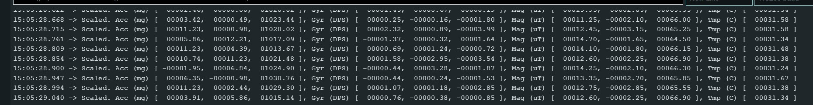
It has been observed that in the provided code example, the AD0_VAL pin has a default value of 1. The
code's comment suggests that this value can be changed to 0 by closing the ADR jumper.
The IMU board's datasheet indicates that the ICM-20948's slave address is b110100X, which is a 7-bit
address. The least significant bit (LSB) of the 7-bit address is determined by the logic level on the
AD0 pin. This feature enables two ICM-20948s to be connected to the same I2C bus simultaneously. When
using this configuration, one device's address should be b1101000 (AD0 pin is logic low), and the
other's address should be b1101001 (AD0 pin is logic high).
b) I included some programming code to make the LED on the Artemis microcontroller blink when the
IMU is
connected and initialized(In the setup() function). This action serves as a visual cue to indicate that
the connection has been
established successfully.
2. Accelerometer
(a) Pitch and Roll
By using the equation from the lecture , we can calculate the roll and pitch using the code below:
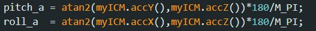The test for {90, 0, 90} for the roll and pitch is shown below:
During the testing, I find that the measurement is accurate with an error of 2.2% ,even though there is small noise affecting the reading. Therefore , two-point calibration is not necessary.
(b) Frequency Spectrum Analysis
To analysis the noise, I record about 200 pitch and roll data point,and do the fft for the pitch and row data,The result is shown below:
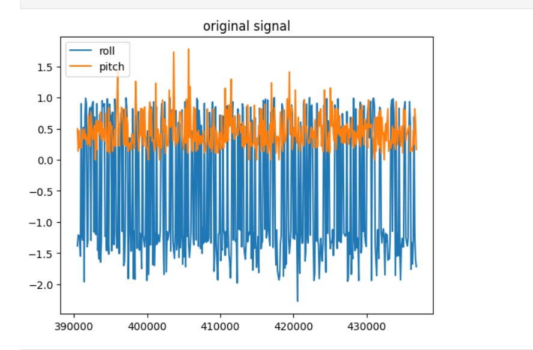 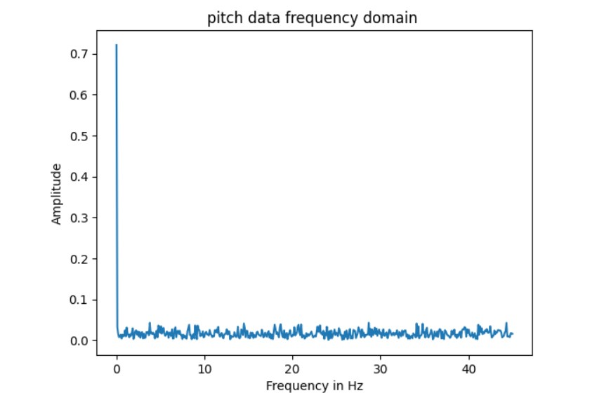 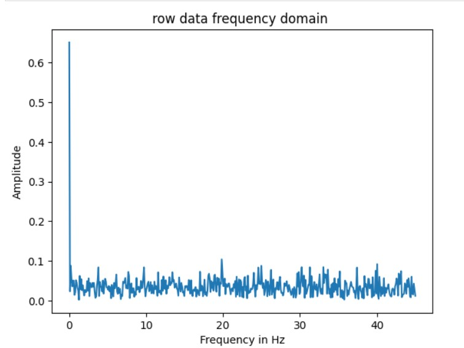As shown in the frequency domain, There is only one significant spike at 0Hz, showning that the noise of the IMU is negligible.Based on the information provided in the IMU's datasheet, it is likely that there is a low-pass filter implemented in the accelerometer that operates within a frequency range of 5.7 Hz to 246 Hz. This filter helps to prevent any external noise or interference from affecting the accuracy of the accelerometer's collected data. Therefore, there is no need to be concerned about ambient noise potentially impacting the data's reliability.
Gyroscope
(a) compute pitch, roll, and yaw angles
The code used to get the pitch , roll and yaw from the gyroscope is shown below:
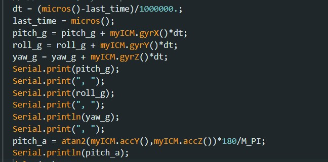To test the reading, I placed the IMU to the pitch angle 90 degree， here is the result:
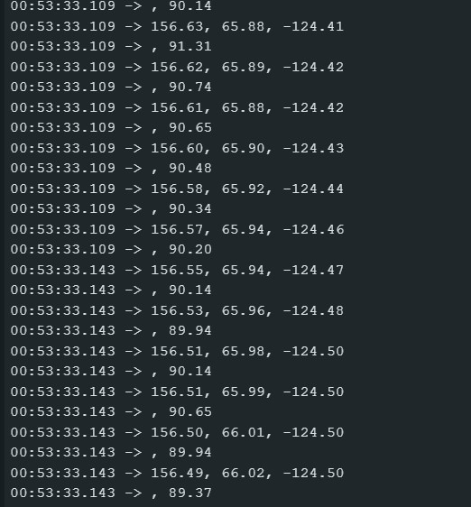we can see the pitch reading from the gyroscope is 156.58 degree, but the true pitch is 90 degree, there is a huge drift in this reading
(b) sampling frequency
I modified the sampling frequency by adding a delay function in the while loop. I test the results of the delay(10),delay(50) and delay(100) when the IMU was palced on the flat desk, The result is shown below:
The delay(10):
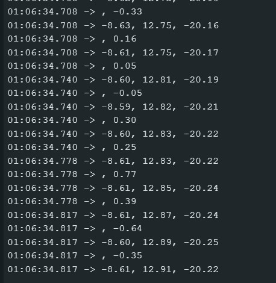The delay(50):
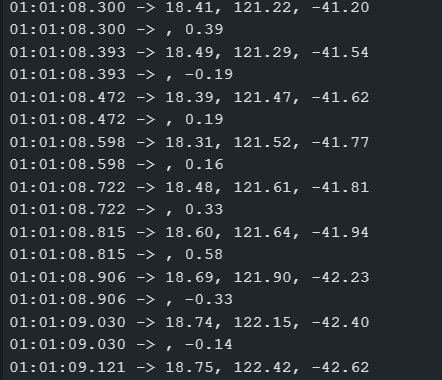The delay(100):
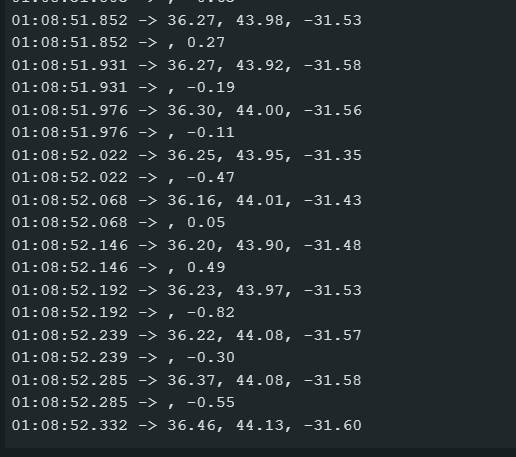As shown in the result , when sampling frequency is lower (more delay in the loop), the drift is lower.
(c) complimentary filter
The formula for the complimentary filter is shown below:
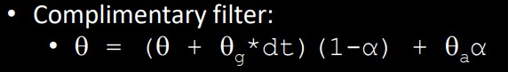The variable alpha is a weight factor. When alpha is set to 1, the resulting theta will match the accelerometer results. If alpha is 0, theta will remain the same as the gyroscope results. If alpha is between 0 and 1, theta will be a combination of both gyroscope and accelerometer readings. This filter is designed to complement the gyroscope measurements, so the gyroscope readings should carry more weight. Therefore, alpha should ideally be less than 0.5. Additionally, gyroscope readings are more reliable than accelerometer readings when it comes to sudden movements. After some testing, it was found that setting alpha to 0.3 effectively counteracts drift when combined with a small amount of accelerometer data. The working range is -180 to 180 , the video below show that it is not susceptible to drift or quick vibrations
The result of running the measure distance with two sensor shown in the video below:
Sample data
To get the data as fast as possible , I removed all the serial print and store the tof and IMU data in the array first , then send it to the computer,The code is shown below:
The result of the sample data is shown in the video below:
An integer value takes up 2 bytes of memory while a floating-point number takes up 4 bytes. Therefore, each sample consisting of 3 integers and 5 floating-point numbers will require 26 bytes of memory. If 10 samples are taken per second, this will result in 260 bytes of data per second. Given that the Artemis has 384 kB of RAM, the device can support 1512 seconds of continuous sampling if all the available memory is used for the data arrays.
Cut the Coord
The motor in the car requires the most power, and is therefore supported by a 3.7V 850mAh battery. On the other hand, the Artemis board and its peripheral sensors utilize a 3.7V 650mAh battery, as they require less power compared to the motor.

Record a stunt
The video for the car without Artemis:
This is the video that RC car with Artemis:
The data collected for a stunt is shown below:
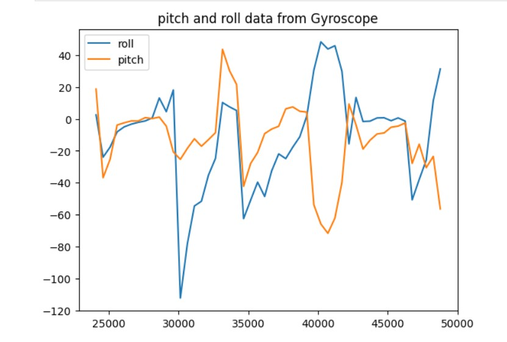 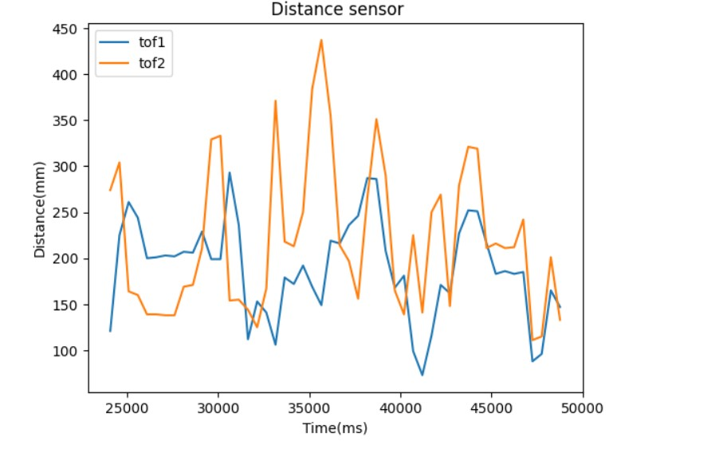 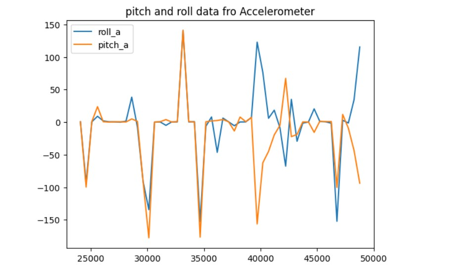